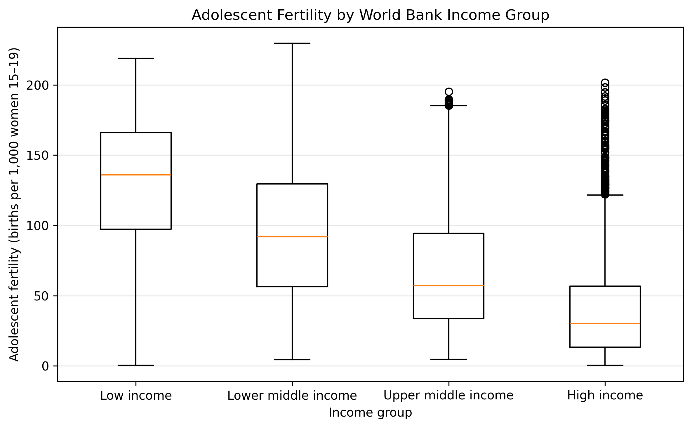

import pandas as pd
# Read the cleaned data saved from the notebook
df = pd.read_csv("df_clean.csv")
# If your fertility column has a different name,
# change "adolescent_fertility" here.
col = "adolescent_fertility"
# Summary by income group
summary_income = (
df.groupby("income_group")[col]
.agg(n_obs="count", mean="mean", median="median", std="std")
.reset_index()
.sort_values("income_group")
)Analysis & Results
Overview of the analysis
In this section, we present the main statistical analysis and visualizations based on our adolescent fertility dataset. Our goal is to describe global patterns, differences across income groups and regions, and how adolescent fertility has changed over time.
Basic statistical / modeling analysis
Before building visualizations or regression models, we first compute some descriptive statistics for adolescent fertility rates across all country-year observations in the cleaned dataset. These summary statistics provide a baseline understanding of the global distribution and help motivate the patterns we explore later in the analysis.
At a high level, adolescent fertility is strongly right-skewed: most countries record relatively low birth rates among girls aged 15–19, while a smaller set of primarily low-income countries show much higher fertility levels.
Key patterns from the basic statistics:
Income and development level:
High-income and OECD/European regions consistently appear at the lowest end of the fertility distribution. In contrast, low-income regions—especially Sub-Saharan Africa—display both higher average fertility rates and much larger within-region variation.Regional differences:
Sub-Saharan Africa has the highest mean adolescent fertility rate and the largest standard deviation, reflecting substantial diversity across countries. Regions such as Europe & Central Asia and North America cluster tightly at the low end of the distribution.Trends over time:
Most regions show a long-run decline in adolescent fertility, but the magnitude of this decline varies: some countries experience sharp downward shifts, while others remain relatively unchanged.
These descriptive statistics set the stage for the visual and modeling sections that follow. By establishing how adolescent fertility varies by income level, region, and time, we can better interpret the heat maps, histograms, interactive visualizations, and regression analyses presented later in the report.
summary_income
The table above reports, for each income group, the number of observations (number_of_obs), the mean, median, and standard deviation of adolescent fertility (births per 1,000 women ages 15–19). This makes the differences between low-, lower-middle-, upper-middle-, and high-income countries visible in numerical form. ## 1. Distribution of adolescent fertility
The first figure is a histogram of the adolescent fertility rate (births per 1,000 women ages 15–19) using all available country–year observations in the cleaned dataset.

From this histogram, we see that most adolescent fertility values are concentrated at relatively lower levels, for example between 0 and 100 births per 1,000 women 15–19. However, there is a long right tail with some country–years that have much higher fertility. This suggests large differences across countries and time periods, and motivates looking at how these differences are structured by income group and region.
2. Differences by income group
Next, we compare the distribution of adolescent fertility across World Bank income groups using boxplots.

The boxplots show a clear pattern:
- Low-income and lower-middle-income countries have higher median adolescent fertility and more variability.
- Upper-middle-income countries have intermediate levels.
- High-income countries have the lowest median adolescent fertility and relatively few extreme values.
This confirms that adolescent fertility is strongly related to income level, at least in descriptive terms. The spread of values is also much larger in lower-income groups, indicating more heterogeneity among those countries.
3. Time trends by income group
We then look at how adolescent fertility has changed over time in each income group. For this, we compute the mean adolescent fertility within each income group and year and plot one line per group from 1960 to 2023.

All income groups show a downward trend in adolescent fertility over time, which indicates global progress. However, the levels and slopes differ noticeably:
- Low-income countries start at very high fertility levels and decline gradually but remain much higher than other groups.
- Lower-middle-income countries begin at high levels but show a strong decline over the decades.
- Upper-middle-income countries follow a similar downward pattern at intermediate levels.
- High-income countries start at much lower levels and decline to very low fertility in recent years.
The lines do not fully converge, which suggests that while everyone is moving downward, the gaps between income groups remain large.
4. Time trends for selected countries
To illustrate country-specific trajectories, we select four representative countries:
- Ethiopia – low income, high fertility,
- India – lower-middle income with strong decline,
- Brazil – upper-middle income,
- Japan – high income with very low fertility.

This plot shows very different starting levels and speeds of decline:
- Ethiopia starts at extremely high adolescent fertility and remains high for many years, although there is a gradual decline in more recent decades.
- India also starts at high levels but shows a strong and sustained decline, especially after around the 1990s.
- Brazil begins at medium levels and steadily declines over time.
- Japan has very low adolescent fertility throughout the entire period, with small fluctuations around a low baseline.
Together, these four trajectories illustrate how income, region, and country-specific factors can lead to very different patterns, even though the overall global trend is downward.
5. Interactive world map in 1960
We use a choropleth world map to visualize the geographic distribution of adolescent fertility in 1960, the first year in our dataset. Each country is colored according to its adolescent fertility rate in that year.
The map below is interactive: we can hover over a country to see its name and exact value, and use the toolbar to zoom and pan.
In 1960, high adolescent fertility is widespread across many low-income regions, especially in parts of Sub-Saharan Africa and some other developing areas. While some high-income regions already display lower fertility levels, the overall picture is one of generally high adolescent fertility across much of the world.
6. Interactive world map in 2023
We create a second interactive map for 2023, one of the most recent years in the dataset, using the same color scale and projection so that it can be directly compared to the 1960 map.
The 2023 map shows substantial global progress: adolescent fertility has decreased in many regions, particularly in upper-middle- and high-income countries. However, some countries and regions, especially in parts of Sub-Saharan Africa, still have high adolescent fertility rates. Comparing the 1960 and 2023 maps side by side makes it clear that global progress has been uneven and that large geographic disparities remain.
7. Brief regression summary
Finally, we fit simple regression models (not shown in detail here) with adolescent fertility as the response and predictors such as Year and income group indicators. These models confirm two main patterns that we see in the plots:
- A significant negative relationship between
Yearand adolescent fertility, summarizing the global downward trend over time. - Significant differences between income groups, with low-income countries having higher expected adolescent fertility than high-income countries, even after controlling for the time trend.
Overall, the descriptive statistics, visualizations, and simple regression results tell a consistent story: adolescent fertility has fallen substantially worldwide since 1960, but it remains much higher in many low-income and some lower-middle-income countries, leading to persistent inequalities across income groups and regions.